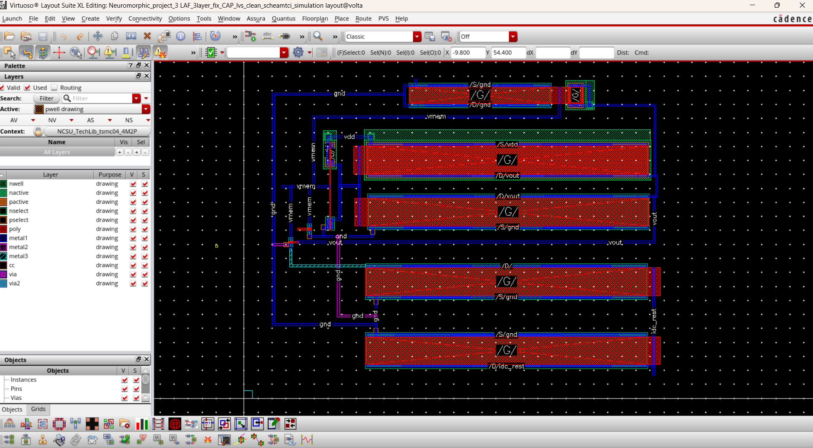

CMOS Leaky Integrate-and-Fire Neuromorphic Neuron
Transistor-level LIF neuron with membrane integration, leakage, threshold detection, spiking, and reset, calibrated into a Python SNN model.
Cadence Virtuoso · Spectre · NCSU 0.35 µm → GPDK45 · Python · SpikingJelly
94.5% circuit-calibrated MNIST accuracy vs. 97.4% ideal